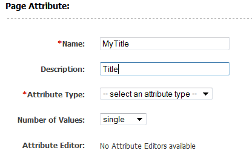
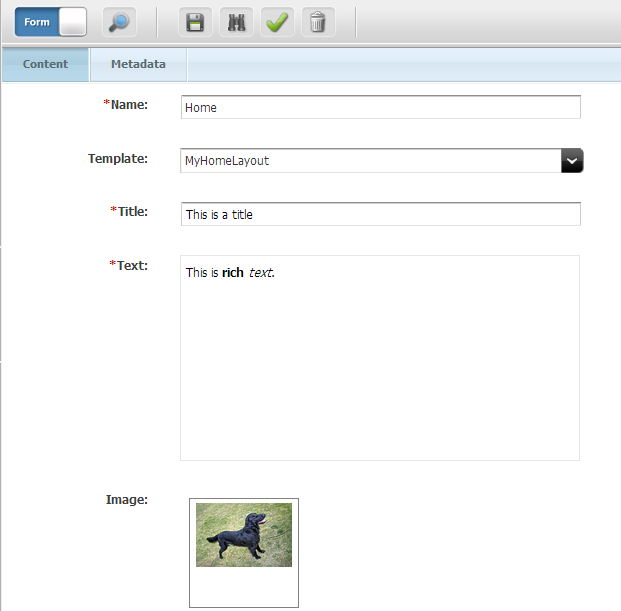

AgileSites
the Easy framework for Agile development with Oracle WebCenter Sites
ReadContent
Prev: Picker.
In this section we will see how to create content specific for the home page.
In particular we will add a title, an image, a text and a reference to another page.
We will see then how to render those attributes.
Creating a new attribute
Here is described, step by step, how to create an attribute named MyTitle.
First go in the administrative interface, click on New and then click on New Page Attribute

Create a new Page Attribute named MyTitle, but use the name without the prefix in the description (so the user won't see the prefix). Select string as attribute type, and single as number of values.

Now search for the Page Definition we created before. In the administrative interface, click on Find then Find Page Definition.

Search for the MyHome page definition, edit it and add as a required field the newly created attribute MyTitle.

Add other attributes
Now, create an attribute editor named MyCKEditor using this xml file:
<PRESENTATIONOBJECT>
<CKEDITOR/>
</PRESENTATIONOBJECT>
Following the same procedure as before, create the f../d\i/g\snap4286.pnglowing attributes:
- MyText, attribute type
text, single, attribute editorMyCKEditor - MyImage, attribute type
blob, single - MyRelated, attribute type
asset, multipe, for asset typePage, asset subtypesAny
then add them to the Page Definition MyHome (MyText should be mandatory, MyImage and MyRelated optional).
Finally go in the contributor interface, and edit the content.
You should see a form like this that you can fill with values to be used later.

The enviroment
Each template has a corresponding class generated by the code generator. This class extends wcs.java.Element and must implement the method apply whose standard structure is
@Override
public String apply(Env e) {
Asset a = e.getAsset()
Picker p = Picker.load("...")
/* replacements here */
return p.html()
}
Basically the apply method receive an Env that is a facade to access all the Sites enviroment. A key method is e.getAsset() that will return an asset Asset instance. The Asset instance is the key since it allows to access to the attributes, either single and multiple. Note that all the multiple items are typically indexed using the getRange method that produces a iterator of integer.
There are other methods and features in the Env, most notably it allows to access to variables (e.getString("List") and lists (e.getString("List", index, "field").
Rendering the attribute
For a quick introductory example a common usage is to pick a template, select the content then replace the title with the attribute title. Here a.getString("Title") returns the title attribute but it will be explained next. The typical Picker usage is then:
// load the given template and then restrict to the element with id=body
Picker p = Picker.load("/site/template.html", "#body");
// replace the html of the title with the actual title attribute
p.replace("#title", a.getString("Title");
// return the html
return p.html();
Note that picker uses a fluent interface, and almost all the methods returns itself so the precedent example can be written:
return Picker.load("/site/template.html", "#body")
.replace("#title", a.getString("Title").htlm();
Multiple attributes are rendered using this code pattern:
for(int i: a.getRange("Title")) {
String x = a.getString("Title", i));
// use x
}
Rendering an Image
At attribute of type blob can be rendered using the a.getBlobUrl("Blob"). Here is an example to render the image using an html tag:
<img id="image-main">
with this code:
String image = a.getBlobUrl("Image");
if (image == null)
html.remove("#image-main");
else
html.attr("#image-main", "src", image);
Invoking a template
When you have an attribute of type asset, you can render the linked template loading the template with a.getAsset("Related","Page") then invoking the template with a.call("DmSummary"). Note that:
- the
a.getAssetrequires you specify the type of the linked asset, since it is not stored in the attribute (only the id is) - you need to call the template by name using the loaded asset
The standard code to render a linked asset is (assuming the asset is of type Page using the DmSummary template) is then:
a.getAsset("Related", "Page").call("DmSummary")
Next: Testing
AgileSites - Written by Michele Sciabarrà - © 2013 Sciabarra srl
Open Source Software releases under the Apache License 2.0
Credits: Hosted on GitHub Pages using the Dinky theme for Jekyll Bootstrap